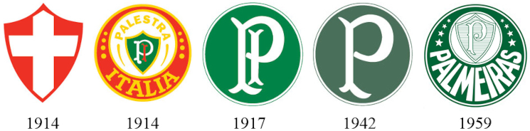

Fundado por imigrantes italianos, seu primeiro nome foi Società Sportiva Palestra Italia. Em 1942, quando estava estabelecida como uma força do futebol paulista, a equipe foi obrigada a trocar de nome, passando a se chamar Sociedade Esportiva Palmeiras em decorrência da Segunda Guerra Mundial.
Escudos
Desde os primeiros jogos disputados, a letra "P" sempre esteve presente nos escudos dos uniformes do Palmeiras. Em 1915, na primeira partida do então Palestra Itália, as letras “P” e “I”, em forma arcaica, nas cores brancas, ornavam o escudo que se situava no lado esquerdo do uniforme dos jogadores. Em 1916, para a disputa do Campeonato Paulista daquele ano, a diretoria do clube decidiu importar da Itália um jogo de camisas com o escudo da Cruz de Savóia.

Estadios
Palestra Itália
O Estádio Palestra Itália, também conhecido popularmente como Parque Antártica, foi um estádio de futebol pertencente à Sociedade Esportiva Palmeiras, localizado no distrito da Barra Funda, na zona oeste da cidade de São Paulo. Em julho de 2010, deixou de receber partidas de futebol e demais eventos, em virtude do início das reformas para transformar o local em uma moderna arena multiuso, o Allianz Parque.
Descrição:
Local: São Paulo - SP
Capacidade: 27.650
Construção: 1933
Gramado: Natural
Demolido: 2011
Allianz Parque
Moderno e imponente, o Allianz Parque é a principal arena multiuso da América Latina. Localizada no coração de São Paulo, maior metrópole do continente, no mesmo solo que por mais de 100 anos abrigou o Parque Antarctica e, posteriormente, o Estádio Palestra Italia, a casa do Palmeiras foi reinaugurada em 2014 como um marco do centenário do clube e hoje é um dos grandes orgulhos da torcida alviverde.